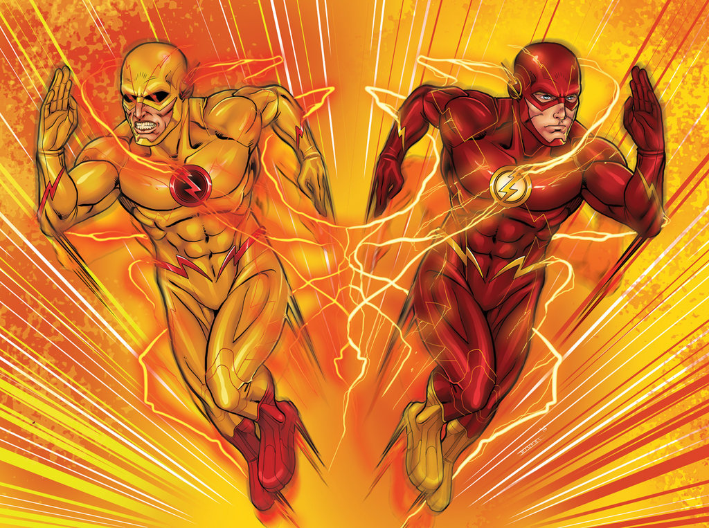

-Girder
-Professor Zoom (Reverse Flash)
-Captain Cold
-Captain Boomerang
-Heat Wave
-Killer Frost
-Weather Wizard
-Multiplex
-The Mist
-Doctor Light
-Pied Piper
-Gorilla Grodd
-Plastique
-Peek-A-Boo
-Rainbow Raider
-The Trickster
Godspeed has a neat design which is mildly reminiscent of the CWverse Zoom and The Suit, but there don’t seem to be any other details available about him or her. And Wally West appears on the promotional cover as Kid Flash, as noted above, along with Iris West and Captain Cold. Cold is still using the cold gun but also seems to have ice effects on his arms, so it’ll be interesting to see what his status is in the relaunch. Wally’s also clearly an established hero in the promotional images, and it’s not clear if we’ll be seeing him become Kid Flash before Williamson’s run begins in June, or if the new book will set it up or just jump ahead.
Edward Clariss aka the Rival first appeared in Flash Comics #104 (February 1949). Dr. Edward Clariss, a professor at the university attended by the Golden Age Flash, Jay Garrick, has recreated the formula that gave Garrick his speed, which he calls "Velocity 9". He had heard Joan one night talking about how the Flash gave his speed to another student, which helped him get the last formula. Bitter at the scientific community's rejection of his claims, Clariss becomes a criminal. He wore a darker version of Flash's outfit and gave it to several other criminals. The Rival's version of the formula proves to be temporary, and he is defeated and jailed.
Eobard Thawne aka Reverse-Flash, first appeared in The Flash #139 (September 1963). Originally, he is a criminal from the 25th century who found a time capsule containing the Silver Age Flash's costume. He is able to use a machine to amplify the suit's speed energy, providing the abilities of the Flash as long as he wears it. In the process, the colors of the costume reverse, with the suit becoming yellow, the boots and lightning bolt highlights turning red, and the chest symbol's white circle becoming black. He uses his speed to commit crimes. Flash had travelled to the future as he discovered an atomic clock in the capsule would become an atomic bomb due to the process. He defeated Reverse-Flash by making his friction-protection aura burn away and stopped the bomb from exploding. Despite destroying the costume, Reverse-Flash is still able to cause trouble for him. His knowledge of Allen’s dual identity enables him to strike at Allen by killing his wife Iris. He vibrates his hand through her skull after she refuses to marry him. Later he attempts to kill his fiancée Fiona. While saving Fiona’s life, the Flash breaks his neck, killing him.
Hunter Zolomon, or Zoom, first appeared in The Flash: Secret Files & Origins #3. After arriving in Keystone City, Hunter Zolomon was hired as a profiler, working with the police in their Department of Metahuman Hostilities. His work put him in constant contact with the Flash (Wally West), and the two became good friends. His insight was critical in solving cases, but he resented being stuck behind a desk. He was severely injured in an attack by Gorilla Grodd, leaving him paralyzed from the waist down. He asked West to use the time-travelling cosmic treadmill in the Flash Museum to prevent this from occurring. West refused, saying that he could not risk damaging the timestream. Zolomon then broke into the museum and attempted to use the treadmill himself. The resulting explosion destroyed the museum (as well as his remaining sanity) and shifted Hunter's connection to time. He could now alter his personal timeline, giving the effect of super-speed.